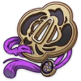
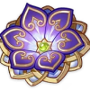

| Icone |  |
| Nome | Selo da Insulação |
| Efeito 2 Peças | Recarga de Energia +20% |
| Efeito 4 Peças | Aumenta o Dano do Supremo em 25% da Recarga de Energia. No máximo é possível obter 75% de aumento de Dano dessa maneira. |
 Relógio Status Relógio Status |
ER%/ATK% |
 Cálice Status Cálice Status |
Eletro DMG%/Atk% |
 Coroa Status Coroa Status |
CritRate%/CritDMG% |
| Subs Status | CritRate%/CritDMG%/ER% |
| Icone |  |
| Nome | Flor do Paraíso Perdido |
| Efeito 2 Peças | Aumenta a Proficiência Elemental em 80. |
| Efeito 4 Peças | Aumenta em 40% o Dano infligido pelas reações de Florescimento, Superflorescimento e Germinação de seu portador. Além disto, após o personagem que está equipado com este conjunto de artefatos desencadear as reações de Florescimento, Superflorescimento e Germinação, o bônus descrito acima é aumentado em 25%. Este efeito dura 10s e pode ser acumulado até 4 vezes, podendo ser desencadeado 1 vez por segundo. Este efeito pode ser desencadeado também quando o seu portador está na equipe, porém fora do campo de batalha. |
 Relógio Status Relógio Status |
EM |
 Cálice Status Cálice Status |
EM |
 Coroa Status Coroa Status |
EM |
| Subs Status | EM/ER% |